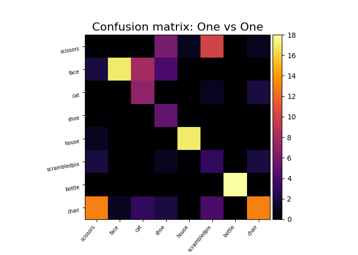
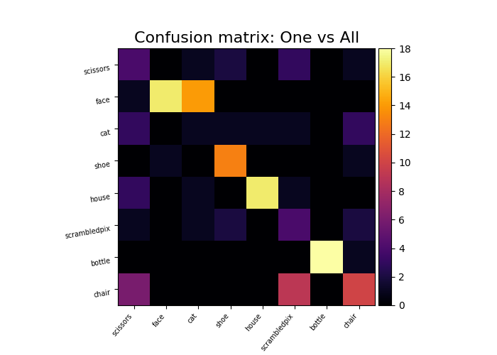

Note
Click here to download the full example code or to run this example in your browser via Binder
9.3.7. The haxby dataset: different multi-class strategies¶
We compare one vs all and one vs one multi-class strategies: the overall cross-validated accuracy and the confusion matrix.
9.3.7.1. Load the Haxby data dataset¶
from nilearn import datasets
import numpy as np
import pandas as pd
# By default 2nd subject from haxby datasets will be fetched.
haxby_dataset = datasets.fetch_haxby()
# Print basic information on the dataset
print('Mask nifti images are located at: %s' % haxby_dataset.mask)
print('Functional nifti images are located at: %s' % haxby_dataset.func[0])
func_filename = haxby_dataset.func[0]
mask_filename = haxby_dataset.mask
# Load the behavioral data that we will predict
labels = pd.read_csv(haxby_dataset.session_target[0], sep=" ")
y = labels['labels']
session = labels['chunks']
# Remove the rest condition, it is not very interesting
non_rest = (y != 'rest')
y = y[non_rest]
# Get the labels of the numerical conditions represented by the vector y
unique_conditions, order = np.unique(y, return_index=True)
# Sort the conditions by the order of appearance
unique_conditions = unique_conditions[np.argsort(order)]
Out:
Mask nifti images are located at: /home/circleci/nilearn_data/haxby2001/mask.nii.gz
Functional nifti images are located at: /home/circleci/nilearn_data/haxby2001/subj2/bold.nii.gz
9.3.7.2. Prepare the fMRI data¶
from nilearn.input_data import NiftiMasker
# For decoding, standardizing is often very important
nifti_masker = NiftiMasker(mask_img=mask_filename, standardize=True,
sessions=session, smoothing_fwhm=4,
memory="nilearn_cache", memory_level=1)
X = nifti_masker.fit_transform(func_filename)
# Remove the "rest" condition
X = X[non_rest]
session = session[non_rest]
Out:
/home/circleci/project/nilearn/_utils/helpers.py:145: FutureWarning:
The parameter "sessions" will be removed in 0.9.0 release of Nilearn. Please use the parameter "runs" instead.
9.3.7.3. Build the decoders, using scikit-learn¶
Here we use a Support Vector Classification, with a linear kernel, and a simple feature selection step
from sklearn.svm import SVC
from sklearn.feature_selection import SelectKBest, f_classif
from sklearn.multiclass import OneVsOneClassifier, OneVsRestClassifier
from sklearn.pipeline import Pipeline
svc_ovo = OneVsOneClassifier(Pipeline([
('anova', SelectKBest(f_classif, k=500)),
('svc', SVC(kernel='linear'))
]))
svc_ova = OneVsRestClassifier(Pipeline([
('anova', SelectKBest(f_classif, k=500)),
('svc', SVC(kernel='linear'))
]))
9.3.7.4. Now we compute cross-validation scores¶
from sklearn.model_selection import cross_val_score
cv_scores_ovo = cross_val_score(svc_ovo, X, y, cv=5, verbose=1)
cv_scores_ova = cross_val_score(svc_ova, X, y, cv=5, verbose=1)
print('OvO:', cv_scores_ovo.mean())
print('OvA:', cv_scores_ova.mean())
Out:
[Parallel(n_jobs=1)]: Using backend SequentialBackend with 1 concurrent workers.
[Parallel(n_jobs=1)]: Done 5 out of 5 | elapsed: 17.2s finished
[Parallel(n_jobs=1)]: Using backend SequentialBackend with 1 concurrent workers.
[Parallel(n_jobs=1)]: Done 5 out of 5 | elapsed: 12.1s finished
OvO: 0.601855088049469
OvA: 0.6712058072321548
9.3.7.5. Plot barplots of the prediction scores¶
from matplotlib import pyplot as plt
plt.figure(figsize=(4, 3))
plt.boxplot([cv_scores_ova, cv_scores_ovo])
plt.xticks([1, 2], ['One vs All', 'One vs One'])
plt.title('Prediction: accuracy score')
Out:
Text(0.5, 1.0, 'Prediction: accuracy score')
9.3.7.6. Plot a confusion matrix¶
We fit on the first 10 sessions and plot a confusion matrix on the last 2 sessions
from sklearn.metrics import confusion_matrix
from nilearn.plotting import plot_matrix, show
svc_ovo.fit(X[session < 10], y[session < 10])
y_pred_ovo = svc_ovo.predict(X[session >= 10])
plot_matrix(confusion_matrix(y_pred_ovo, y[session >= 10]),
labels=unique_conditions,
title='Confusion matrix: One vs One', cmap='hot_r')
svc_ova.fit(X[session < 10], y[session < 10])
y_pred_ova = svc_ova.predict(X[session >= 10])
plot_matrix(confusion_matrix(y_pred_ova, y[session >= 10]),
labels=unique_conditions,
title='Confusion matrix: One vs All', cmap='hot_r')
show()
- 
- 
Total running time of the script: ( 0 minutes 53.882 seconds)
Estimated memory usage: 2677 MB